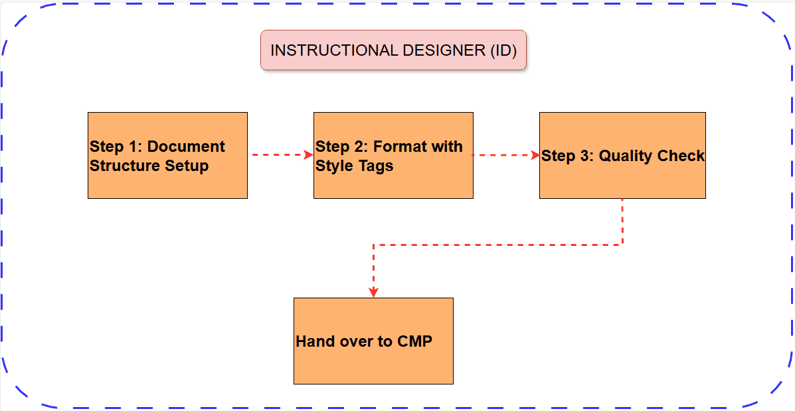
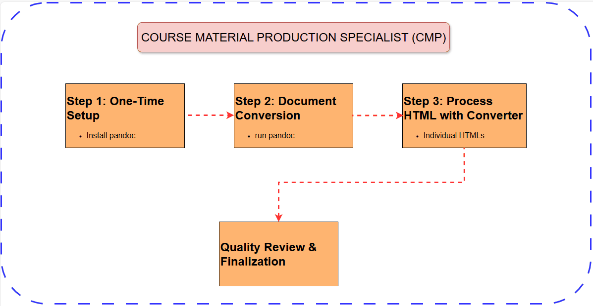
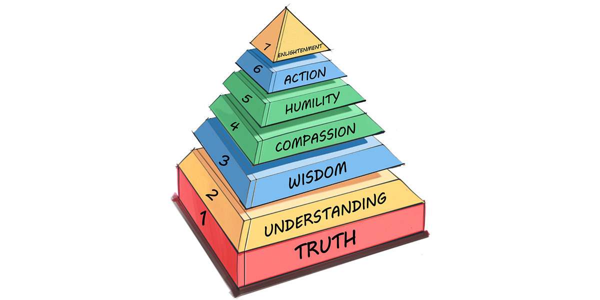

Quick Start
Choose your role and get started immediately
👩🏫 ID Workflow
Document preparation and formatting
👨💻 CMP Workflow
Conversion and file processing
👩🏫 I'm an Instructional Designer (ID)
Goal: Format an LO Word document and hand over to CMPs for conversion
Quick Steps:
- Use X.Y.Z headings with H1 style (e.g., 1.0.0, 1.1.0)
- Wrap content with
[[style:type]]tags - Use
[[style:note]]to leave notes for CMPs - Run through quality checklist before sending
👨💻 I'm a Course Material Production Specialist (CMP)
Goal: Convert and process documents for Brightspace
Quick Steps:
- Install Pandoc (one-time setup)
- Convert the LO Word document to HTML:
pandoc input.docx -s -o output.html --extract-media=. --ascii - Upload HTML to web converter
- Review, insert media, and finalize files
🆘 Need Something Quick?
🎯 End Result
One Word document becomes multiple HTML files ready for Brightspace upload, with proper styling, interactive elements, and Learning Technologies global stylesheet (version 2015).
Complete Guide for IDs
Everything you need to format Word documents for conversion
Step 1: Document Structure Setup
- Your Word document must use the X.Y.Z heading pattern with Heading 1 (H1) style for automatic section detection.
- Use Word's default styles and avoid creating or applying custom styles.
- While you can use Word's comment feature to communicate with the SME, the comments will not show up in the converted HTML document. Use the [[style:note]]...[[/style]] tag to leave notes to CMPs.
📝 Heading Pattern Examples
| Word Document Section Heading | Generated HTML Heading | Generated Filename | File Type |
|---|---|---|---|
| 1.0.0 or LO1 Introduction to Leadership |
1. Introduction to Leadership | 01_00_00_introduction_to_leadership.html | Learning Outcome |
| 1.1.0 Getting Started | Step 1: Getting Started | 01_01_00_getting_started.html | Learning Step |
| 1.1.1 Discussion: What is Leadership? | 1.1 Discussion: What is Leadership? | 01_01_01_discussion_what_is_leadership.html | Learning Activity |
| LO Summary: Course Summary | LO Summary: Course Summary | 01_00_00_summary.html | LO Summary |
Step 2: Format LO Word document with Style Tags
Style tags transform plain content into elements automatically styled with the global stylesheet. Always use the format:
[[style:type]]
content goes here
[[/style]]
- Always place the opening and closing tags in separate paragraphs as shown above.
- Ensure that opening and closing tags are enclosed in double square brackets - [[...]]
🎯 Style Tag Examples
The rendered output examples below may not exactly match how the HTML will appear when uploaded to Brightspace.
📖 Reading Assignment
[[style:read]]
Read Chapter 3: "Introduction to Project Management" in your textbook (pages 45-67).
Pay special attention to the section on stakeholder analysis.
[[/style]]
🌐 Rendered Output
Read
Read Chapter 3: "Introduction to Project Management" in your textbook (pages 45-67).
Pay special attention to the section on stakeholder analysis.
💬 Discussion Forum
[[style:discussion]]
Discussion Forum: Leadership Styles
Initial Post Due: Wednesday by 11:59 PM
Replies Due: Sunday by 11:59 PM
Which leadership style do you think is most effective in today's workplace?
[[/style]]
🌐 Rendered Output
Discussion
Discussion Forum: Leadership Styles
Initial Post Due: Wednesday by 11:59 PM
Replies Due: Sunday by 11:59 PM
Which leadership style do you think is most effective in today's workplace?
Step 3: CMP Communication Guidelines
[[style:note]] to leave notes to CMPs.
📝 Communication Best Practices
✅ Correct Way (Converts)
[[style:note]]
CMP: Please replace this placeholder with the leadership styles infographic we discussed. The file should be named "leadership-styles-v2.png" and include alt text: "Comparison of four leadership styles: autocratic, democratic, laissez-faire, and transformational"
[[/style]]
❌ Wrong Way (Doesn't Convert)
Using Word's comment feature - this will be lost during conversion!
Step 4: Quality Check Before Submission
Use this checklist before sending your document to the CMP:
→ Go to complete ID Quality Checklist
Complete Guide for CMPs
Everything you need to convert and process documents
Step 1: One-Time Setup
📥 Pandoc Installation
Pandoc is required to convert Word documents to HTML. Pandoc is the recommended Word-to-HTML converter because it produces clean, semantic HTML code. This is a one-time setup.
🪟 Windows Installation (Recommended)
- Visit https://pandoc.org/installing.html
- Download the Windows installer (.msi file)
- Run installer with administrator privileges
- Restart your command prompt or PowerShell
🍎 macOS Installation
Or download the .pkg installer from the Pandoc website.
✅ Verify Installation
Open terminal/command prompt and run:
You should see version information. If you get "command not found", restart your terminal.
- Command not found: Restart terminal or add Pandoc to system PATH
- Permission denied: Run installation with admin privileges
Step 2: Document Conversion
PowerShell_here_as_administrator_context_menu.reg. This
adds "Open PowerShell here as Administrator" to your right-click context menu, making it
easy to open PowerShell directly in any folder to run pandoc commands.
🔄 Conversion Process
- Navigate to document folder: Open terminal/command prompt in the folder containing your .docx file (or use the PowerShell context menu if installed)
- Run conversion command:
Replace input.docx and output.html with your LO Word document
name and preferred HTML filename, respectively.
📋 Command Breakdown
input.docx- Your Word document filename-s- Standalone HTML document-o output.html- Output filename--extract-media=.- Extract images to amediasubfolder within the current directory
--ascii - Use ASCII encoding for compatibility✅ Expected Results
After conversion, you should have:
- output.html - The converted HTML file
- media folder - Contains extracted images (if any)
- No error messages - Clean conversion
- File not found: Check filename and path
- Permission denied: Ensure you have write access to the folder
- Encoding errors: The --ascii flag usually resolves these
Step 3: Processing the Pandoc-Generated HTML
Pandoc converts the LO Word document to a single HTML document with no CSS styles applied. You need to use the CMP Document Converter to split the HTML into individual HTML documents with the global CSS stylesheet applied.
🌐 Using the CMP Document Converter
- Open the CMP Document Converter web interface
- Skip Step 2: Test Connection.
- Upload your HTML file (the output.html from Step 2) and click Convert Document
- Wait for processing - The system will:
- Parse the document structure
- Apply style transformations
- Generate individual section files
- Create media request file (if applicable)
- Preview and Download the generated files - You can scroll down to the bottom to preview the generated HTML files. If the results are satisfactory, you can download the TAR archive with all HTML files
- Right-click the TAR archive file and extract all HTML files to a folder of your
choice. If the ID's LO Word document contains images, the image links will be broken
in the individual HTML files. To fix this, copy the
mediafolder created by Pandoc to the same directory where you extracted the TAR archive.
📁 Expected Output
The web converter generates:
- Individual HTML files - One for each H1 section
- Media requests file - Contains all [[style:request]] content
- Proper naming - Files follow the 01_02_03_title.html convention
- Learning Technologies global style - Global styles will be applied automatically
Step 4: Quality Review & Finalization
🔍 Review Process
- Open each HTML file in a web browser
- Check formatting - Verify all style tags rendered correctly
- Test functionality - Ensure interactive elements work
- Verify content accuracy - Compare with original Word document
🖼️ Media Integration
Replace all media request placeholders with actual content:
- Images: Add proper alt text and citations
- Videos: Embed with proper controls and captions
- Interactive elements: Test functionality thoroughly
- Links: Verify all external links work
→ Use the complete CMP Review Checklist
Complete Style Reference
All available style tags organized by purpose
📋 Quick Reference Table
| Style Tag | Purpose | Color | Best Used For |
|---|---|---|---|
read |
Reading assignments | Sand | Textbook chapters, articles |
watch |
Video content | Sand | Lecture videos, tutorials |
activity |
Learning activities | Sand | Exercises, reflections |
assignment |
Formal assignments | Sand | Projects, papers, reports |
discussion |
Discussion forums | Green | Forum posts, debates |
post |
Social posts | Green | Blog posts, reflections |
reference |
Citations & sources | Collapsible | Bibliography, sources |
transcript |
Text alternatives | Expandable | Video transcripts, captions |
standout |
Important info | Highlighted | Key concepts, warnings |
image |
Images with citations | Figure | Diagrams, photos |
code |
Programming code | Syntax highlighted | Code examples, scripts |
request |
Media requests | Extracted | CMP media instructions |
note |
CMP communication | Placeholder | Instructions to CMPs |
📚 Learning Activities (Sand Background)
📖 Read Activity
📝 Word Document Format:
[[style:read]]
Read Chapter 3: "Introduction to Project Management" in your textbook (pages 45-67).
Pay special attention to:
• Stakeholder analysis techniques
• Project lifecycle phases
• Risk management strategies
Complete the chapter review questions at the end.
[[/style]]
🌐 Rendered HTML Output:
Read
Read Chapter 3: "Introduction to Project Management" in your textbook (pages 45-67).
Pay special attention to:
- Stakeholder analysis techniques
- Project lifecycle phases
- Risk management strategies
Complete the chapter review questions at the end.
📺 Watch Activity
📝 Word Document Format:
[[style:watch]]
Watch: "Effective Team Communication" (15 minutes)
[Video will be embedded here by CMP]
While watching, take notes on:
1. The five communication barriers discussed
2. Strategies for virtual team meetings
3. Examples of effective feedback techniques
You'll need these notes for the upcoming discussion forum.
[[/style]]
🌐 Rendered HTML Output:
Watch
Watch: "Effective Team Communication" (15 minutes)
[Video will be embedded here by CMP]
While watching, take notes on:
- The five communication barriers discussed
- Strategies for virtual team meetings
- Examples of effective feedback techniques
You'll need these notes for the upcoming discussion forum.
🎯 Activity
📝 Word Document Format:
[[style:activity]]
Reflection Exercise: Leadership Experience
Think about a time when you were in a leadership role (formal or informal).
Write a 300-word reflection addressing:
• What leadership style did you use?
• What challenges did you face?
• What would you do differently?
• How does this connect to the course concepts?
Submit your reflection to the discussion forum by Wednesday.
[[/style]]
🌐 Rendered HTML Output:
Activity
Reflection Exercise: Leadership Experience
Think about a time when you were in a leadership role (formal or informal).
Write a 300-word reflection addressing:
- What leadership style did you use?
- What challenges did you face?
- What would you do differently?
- How does this connect to the course concepts?
Submit your reflection to the discussion forum by Wednesday.
📋 Assignment
📝 Word Document Format:
[[style:assignment]]
Assignment 2: Case Study Analysis
Due: Week 6, Friday by 11:59 PM
Weight: 25% of final grade
Length: 1,500-2,000 words
Instructions:
Analyze the "Northern Manufacturing Ltd." case study using the frameworks
discussed in class.
Your analysis must include:
1. Problem identification and root cause analysis
2. Three alternative solutions with pros/cons
3. Recommended solution with detailed justification
4. Implementation timeline and resource requirements
Submission: Upload as PDF to assignment dropbox
Format: APA style, 12pt Times New Roman, double-spaced
[[/style]]
🌐 Rendered HTML Output:
Assignment
Assignment 2: Case Study Analysis
Due: Week 6, Friday by 11:59 PM
Weight: 25% of final grade
Length: 1,500-2,000 words
Instructions:
Analyze the "Northern Manufacturing Ltd." case study using the frameworks
discussed in class.
Your analysis must include:
- Problem identification and root cause analysis
- Three alternative solutions with pros/cons
- Recommended solution with detailed justification
- Implementation timeline and resource requirements
Submission: Upload as PDF to assignment dropbox
Format: APA style, 12pt Times New Roman, double-spaced
💬 Discussion & Interaction (Green Background)
💬 Discussion Forum
📝 Word Document Format:
[[style:discussion]]
Discussion Forum: Leadership Styles in Crisis
Initial Post Due: Wednesday by 11:59 PM
Peer Replies Due: Sunday by 11:59 PM
After completing this week's readings and watching the crisis leadership video, discuss:
"Which leadership style is most effective during organizational crises? Support your argument with examples from the course materials and current events."
Requirements:
• Initial post: 400-500 words
• Respond to at least 2 classmates (200 words each)
• Include at least 2 scholarly references
• Use APA format for citations
[[/style]]
🌐 Rendered HTML Output:
Discussion
Discussion Forum: Leadership Styles in Crisis
Initial Post Due: Wednesday by 11:59 PM
Peer Replies Due: Sunday by 11:59 PM
After completing this week's readings and watching the crisis leadership video, discuss:
"Which leadership style is most effective during organizational crises? Support your argument with examples from the course materials and current events."
Requirements:
- Initial post: 400-500 words
- Respond to at least 2 classmates (200 words each)
- Include at least 2 scholarly references
- Use APA format for citations
📝 Post
📝 Word Document Format:
[[style:post]]
Weekly Learning Journal
Due: Every Friday by 11:59 PM
This week, reflect on your learning by answering:
1. What was the most surprising thing you learned?
2. How does this week's content connect to your work experience?
3. What concept would you like to explore further?
4. How will you apply this learning in your current role?
Keep your response to 200-300 words. Post directly to the learning journal forum.
[[/style]]
🌐 Rendered HTML Output:
Post
Weekly Learning Journal
Due: Every Friday by 11:59 PM
This week, reflect on your learning by answering:
- What was the most surprising thing you learned?
- How does this week's content connect to your work experience?
- What concept would you like to explore further?
- How will you apply this learning in your current role?
Keep your response to 200-300 words. Post directly to the learning journal forum.
📖 Content Enhancement
💡 Standout/Callout
📝 Word Document Format:
[[style:standout]]
Key Concept: Emotional Intelligence
Emotional intelligence (EI) is the ability to recognize, understand, and manage our own emotions while effectively recognizing and responding to others' emotions.
Research shows that EI is often more important than IQ for leadership success, accounting for 58% of job performance across all industries.
The four components of EI are:
1. Self-awareness
2. Self-regulation
3. Social awareness
4. Relationship management
[[/style]]
🌐 Rendered HTML Output:
Key Concept: Emotional Intelligence
Emotional intelligence (EI) is the ability to recognize, understand, and manage our own emotions while effectively recognizing and responding to others' emotions.
Research shows that EI is often more important than IQ for leadership success, accounting for 58% of job performance across all industries.
The four components of EI are:
- Self-awareness
- Self-regulation
- Social awareness
- Relationship management
📚 Reference
📝 Word Document Format:
[[style:reference]]
Goleman, D. (2006). Emotional intelligence. Bantam Books.
Mayer, J. D., & Salovey, P. (1997). What is emotional intelligence? In P. Salovey & D. Sluyter (Eds.), Emotional development and emotional intelligence: Educational implications (pp. 3-31). Basic Books.
Bar-On, R. (2006). The Bar-On model of emotional-social intelligence (ESI). Psicothema, 18, 13-25.
[[/style]]
🌐 Rendered HTML Output:
Reference(s)
Goleman, D. (2006). Emotional intelligence. Bantam Books.
Mayer, J. D., & Salovey, P. (1997). What is emotional intelligence? In P. Salovey & D. Sluyter (Eds.), Emotional development and emotional intelligence: Educational implications (pp. 3-31). Basic Books.
Bar-On, R. (2006). The Bar-On model of emotional-social intelligence (ESI). Psicothema, 18, 13-25.
📝 Transcript/Caption
📝 Word Document Format:
[[style:transcript]]
Text Version of Leadership Styles Diagram
This diagram shows four leadership styles arranged in a 2x2 matrix:
Top Left - Autocratic Leadership:
- High control, low collaboration
- Leader makes all decisions
- Clear chain of command
- Best for crisis situations
Top Right - Democratic Leadership:
- Moderate control, high collaboration
- Team input valued
- Shared decision-making
- Best for creative projects
Bottom Left - Laissez-faire Leadership:
- Low control, low collaboration
- Minimal leader involvement
- Team self-manages
- Best for expert teams
Bottom Right - Transformational Leadership:
- Low control, high collaboration
- Inspirational vision
- Empowers others
- Best for change initiatives
[[/style]]
🌐 Rendered HTML Output:
This diagram shows four leadership styles arranged in a 2x2 matrix:
Top Left - Autocratic Leadership:
- High control, low collaboration
- Leader makes all decisions
- Clear chain of command
- Best for crisis situations
Top Right - Democratic Leadership:
- Moderate control, high collaboration
- Team input valued
- Shared decision-making
- Best for creative projects
Bottom Left - Laissez-faire Leadership:
- Low control, low collaboration
- Minimal leader involvement
- Team self-manages
- Best for expert teams
Bottom Right - Transformational Leadership:
- Low control, high collaboration
- Inspirational vision
- Empowers others
- Best for change initiatives
🖼️ Media & Visual Content
🖼️ Image (Centered)
📝 Word Document Format:
[[style:image]]

Caption: The leadership pyramid demonstrates how foundational skills support advanced leadership capabilities.
Citation: Adapted from Northouse, P. G. (2021). Leadership: Theory and practice (8th ed.). SAGE Publications.
[[/style]]
🌐 Rendered HTML Output:
🖼️ Image Left/Right
📝 Word Document Format:
[[style:imageleft]]

Caption: Effective teams demonstrate high levels of trust and psychological safety.
Citation: Photo by Campaign Creators on Unsplash
[[/style]]
This paragraph demonstrates how text flows around the left-floated image. The image appears on the left side of the content area, while this text wraps around it on the right. This layout is particularly effective for integrating visual content with explanatory text, creating a more engaging and space-efficient design. The floating image maintains its position while allowing the text to flow naturally around it, creating a professional and visually appealing layout that enhances the learning experience.
🌐 Rendered HTML Output (Full Width to Show Float Behavior):
This paragraph demonstrates how text flows around the left-floated image. The image appears on the left side of the content area, while this text wraps around it on the right. This layout is particularly effective for integrating visual content with explanatory text, creating a more engaging and space-efficient design. The floating image maintains its position while allowing the text to flow naturally around it, creating a professional and visually appealing layout that enhances the learning experience.
Additional paragraphs continue to wrap around the floated image, demonstrating how this layout technique creates a natural reading flow. The text automatically adjusts to the available space, creating an organic integration between visual and textual content. This approach is commonly used in professional documentation, articles, and educational materials where space efficiency and visual appeal are important considerations.
📋 Request (Media Requests)
📝 Word Document Format:
[[style:request]]
Media Request: Interactive Leadership Assessment
Type: Interactive H5P Content
Purpose: Self-assessment quiz on leadership styles
Location: After the leadership styles content, before the discussion forum
Requirements:
- 10 scenario-based questions
- Immediate feedback for each answer
- Final score with personalized recommendations
- Mobile-responsive design
- Accessible for screen readers
Deadline: Week 3 (before course launch)
Priority: High - this is a key learning activity
Files needed:
- leadership-scenarios.docx (contains question content)
- leadership-feedback.docx (contains feedback text)
Please confirm receipt and estimated completion date.
[[/style]]
🌐 Rendered HTML Output:
[CMP NOTES]
Media Request: Interactive Leadership Assessment
Type: Interactive H5P Content
Purpose: Self-assessment quiz on leadership styles
Location: After the leadership styles content, before the
discussion forum
Requirements:
- 10 scenario-based questions
- Immediate feedback for each answer
- Final score with personalized recommendations
- Mobile-responsive design
- Accessible for screen readers
Deadline: Week 3 (before course launch)
Priority: High - this is a key learning activity
Files needed:
- leadership-scenarios.docx (contains question content)
- leadership-feedback.docx (contains feedback text)
Please confirm receipt and estimated completion date.
💻 Technical Content
💻 Code Block
📝 Word Document Format:
[[style:code]]
// JavaScript function to calculate team effectiveness score
function calculateTeamEffectiveness(trust, communication, collaboration,
results) {
// Validate input parameters
if (trust < 1 || trust> 10 || communication < 1 ||
communication> 10 ||
collaboration < 1 ||
collaboration> 10 || results < 1 || results> 10) {
throw new
Error("All scores must be between 1 and 10");
}
// Calculate weighted average
const weightedScore = (trust * 0.25)
+ (communication * 0.25) +
(collaboration
* 0.25) + (results * 0.25);
// Return score with
interpretation
return {
score:
Math.round(weightedScore * 10) / 10,
interpretation:
getInterpretation(weightedScore)
};
}
function getInterpretation(score) {
if (score >= 8.5) return "Highly
Effective Team";
if (score >= 7.0) return "Effective
Team";
if (score >= 5.5) return "Moderately
Effective Team";
return "Team Needs Development";
}
[[/style]]
🌐 Rendered HTML Output (With Prism.js Syntax Highlighting):
// JavaScript function to calculate team effectiveness score
function calculateTeamEffectiveness(trust, communication, collaboration, results) {
// Validate input parameters
if (trust < 1 || trust > 10 || communication < 1 || communication > 10 ||
collaboration < 1 || collaboration > 10 || results < 1 || results > 10) {
throw new Error("All scores must be between 1 and 10");
}
// Calculate weighted average
const weightedScore = (trust * 0.25) + (communication * 0.25) +
(collaboration * 0.25) + (results * 0.25);
// Return score with interpretation
return {
score: Math.round(weightedScore * 10) / 10,
interpretation: getInterpretation(weightedScore)
};
}
function getInterpretation(score) {
if (score >= 8.5) return "Highly Effective Team";
if (score >= 7.0) return "Effective Team";
if (score >= 5.5) return "Moderately Effective Team";
return "Team Needs Development";
}🔧 Workflow & Communication
📝 Note (CMP Communication)
📝 Word Document Format:
[[style:note]]
CMP Instructions for this section:
1. Replace the placeholder video with the "Leadership in Crisis" video from our media library (file: crisis-leadership-v3.mp4)
2. Add closed captions using the provided transcript file (crisis-leadership-transcript.vtt)
3. Set video to not autoplay, include controls, and start at 0:30 (skip the intro music)
4. After the video, add the leadership assessment interactive element we discussed in our meeting
5. Ensure the assessment results link to the appropriate discussion forum
Please confirm these changes by Friday so we can review before the course launch.
Questions? Contact me at [email] or via Teams.
[[/style]]
🌐 Rendered HTML Output:
[CMP NOTES]
CMP Instructions for this section:
1. Replace the placeholder video with the "Leadership in Crisis" video from our media library (file: crisis-leadership-v3.mp4)
2. Add closed captions using the provided transcript file (crisis-leadership-transcript.vtt)
3. Set video to not autoplay, include controls, and start at 0:30 (skip the intro music)
4. After the video, add the leadership assessment interactive element we discussed in our meeting
5. Ensure the assessment results link to the appropriate discussion forum
Please confirm these changes by Friday so we can review before the course launch.
Questions? Contact me at [email] or via Teams.
ID Pre-Submission Quality Checklist
Complete this checklist before sending your document to the CMP
📝 Document Structure ✓
- All sections use X.Y.Z heading pattern (1.0.0, 1.1.0, 1.1.1, etc.)
- All headings use Heading 1 (H1) style in Word (not just bold text)
- LO Summary section included at the end
- No orphaned headings (every heading has content underneath)
- Heading titles are descriptive and concise
- Document follows logical learning progression
🎨 Style Tags ✓
- All style tags properly closed with [[/style]]
- No nested style tags (one style inside another)
- Style tags are on separate lines (not inline with content)
- Correct style types used for content purpose
- CMP instructions use [[style:note]] not Word comments
- Media requests use [[style:request]] with detailed specifications
🖼️ Media & Content ✓
- All images have proper citations and captions
- Image alt text is descriptive and meaningful
- All external links are functional and appropriate
- Video/audio content has accessibility considerations noted
- Interactive elements are clearly specified in requests
- File names and references are accurate
CMP Pre-Upload Review Checklist
Complete this checklist before uploading files to Brightspace
📁 File Generation & Organization ✓
- All expected HTML files generated from H1 sections
- Media requests file created (if applicable)
- File names follow naming convention (01_02_03_title.html)
- No broken, missing, or duplicate files
- Files are organized in appropriate folder structure
- All generated files open without errors
🎨 Style & Formatting Review ✓
- All style tags rendered correctly (activities, discussions, etc.)
- Global styles applied consistently
- No broken CSS or styling issues
🖼️ Media Integration ✓
- All media request placeholders replaced with actual content
- Images display properly with correct alt text
- Videos embedded with proper controls and captions
- Interactive elements (H5P, etc.) functional and tested
- All file paths and links verified
🔗 Functionality Testing ✓
- All internal links work correctly
- External links open in new tabs and are functional
- Interactive elements respond properly
- Forms and input fields work as expected
- Accordion/collapsible content expands correctly
♿ Accessibility Compliance ✓
- All images have meaningful alt text
- Videos have captions or transcripts
Common Issues & Solutions
Quick solutions to frequently encountered problems
🔧 Pandoc Conversion Issues
Problem: "pandoc: command not found"
Solution:
- Restart your terminal/command prompt
- Verify installation: run
pandoc --version - On Windows: Add Pandoc to system PATH
- On Mac: Try
brew install pandoc - Reinstall Pandoc with administrator privileges
Problem: "Permission denied" during conversion
Solution:
- Ensure you have write access to the output folder
- Close the Word document before conversion
- Run terminal/command prompt as administrator
- Check if output file is open in another program
Problem: Encoding errors or strange characters
Solution:
- Use the
--asciiflag in your Pandoc command - Save Word document as .docx (not .doc)
- Check for special characters or symbols in the document
- Try:
pandoc input.docx -s -o output.html --extract-media=. --ascii
Problem: Images not extracting properly
Solution:
- Ensure you're using
--extract-media=.flag - Check that images are embedded (not linked) in Word
- Verify write permissions in the output directory
- Try extracting to a specific folder:
--extract-media=./media
📝 Document Formatting Issues
Problem: Style tags not working/rendering
Solution:
- Check that all style tags are properly closed:
[[/style]] - Ensure style tags are on separate lines (not inline)
- Verify no nested style tags (one inside another)
- Check for typos in style tag names
- Ensure no extra spaces:
[[style:read]]not[[ style:read ]]
Problem: Headings not creating separate files
Solution:
- Verify headings use Heading 1 (H1) style in Word, not just bold text
- Check heading format follows X.Y.Z pattern (1.0.0, 1.1.0, etc.)
- Ensure no extra characters or formatting in headings
- Confirm each heading has content underneath it
Problem: Missing or incorrect file names
Solution:
- Check that heading titles are descriptive (not just numbers)
- Remove special characters from heading titles
- Ensure consistent heading format throughout document
- Verify LO Summary section is properly formatted
Problem: CMP notes/instructions not visible
Solution:
- Use
[[style:note]]instead of Word comments - Ensure note tags are properly closed
- Check that notes are on separate lines
- Word comments don't convert - always use style tags
🖼️ Media & Display Issues
Problem: Images not displaying in HTML
Solution:
- Check file paths are correct and relative
- Ensure images were extracted during Pandoc conversion
- Verify image files exist in the media folder
- Check image file extensions are correct
- Ensure no spaces or special characters in image filenames
Problem: Code blocks not syntax highlighted
Solution:
- Verify Prism.js libraries are loading (check browser console)
- Ensure code is wrapped in
[[style:code]]tags - Check that code language is being detected correctly
- Verify no HTML entities in code (use plain text)